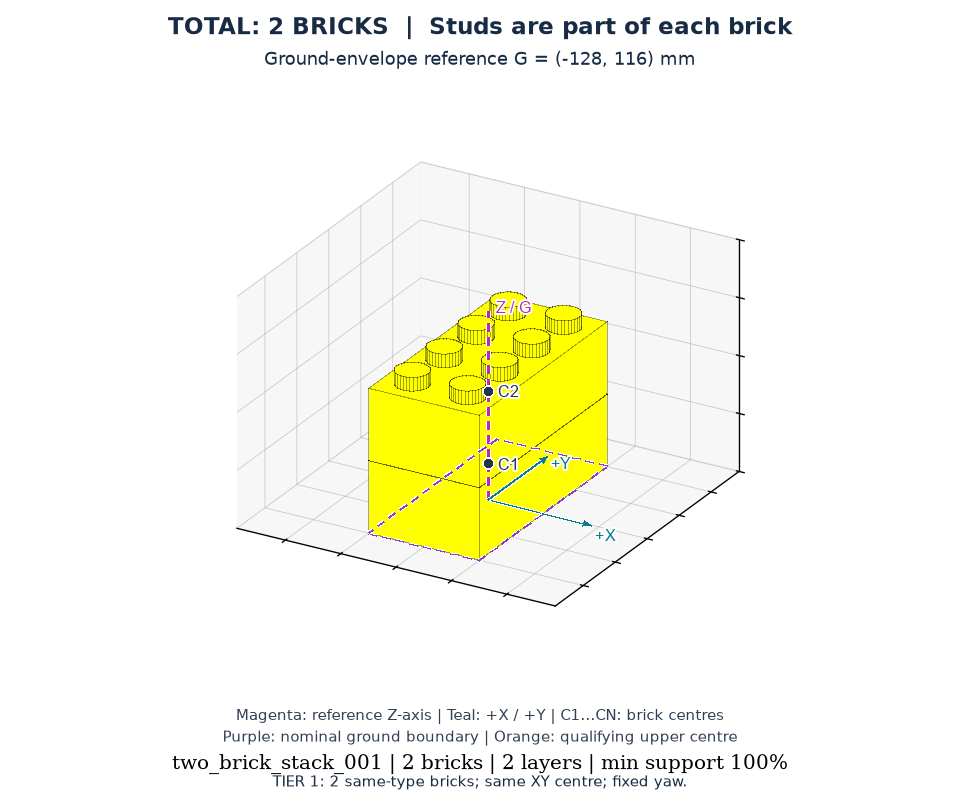
two_brick_stack_001
2 块 · seed 0 · 2 层
四个 Tier 的主示例统一使用 target.png：论文风格固定方位角 -60°、仰角 25°。侧视、分层和中心检查仅作为单独的辅助视图，不替代主示例。
恰好 2 块同砖型，XY 中心相同、朝向固定，逐层垂直堆叠。 所有图片从当前 YAML 渲染；不同视图展示同一任务。任务本体在 versions/latest/tasks/two_brick_stack/。采用论文风格，保留原始积木位置、朝向、类型、颜色。
统一图例：洋红 Z 轴 / 俯视十字：底层包络中点 G 的竖直参考轴；紫色虚线：底层整体边界；C1…CN：各砖 XY 中心（3D/侧视中标在砖体半高处）；橙点：Tier 4 满足边界规则的上层中心；青色 X/Y：世界坐标正方向。G 不是重心，也不是每块砖必须达到的位置。初始散件图以料盘中心 P 为参考，不要求散件中心重合。隐藏中心也以检查标注显示。
底层整体边界 = 所有底层砖的名义底面矩形围成的、与世界 X/Y 轴平行的最小外接矩形；不是单块砖的边界，也不代表空隙处有真实支撑。
看 C1、C2：两个中心应落在同一条洋红色竖轴上，分层俯视图中都在 G 点，朝向相同。

2 块 · seed 0 · 2 层
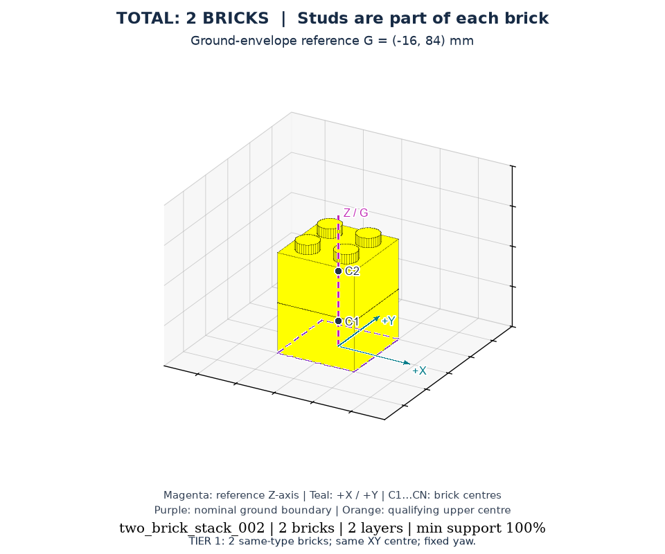
2 块 · seed 1 · 2 层
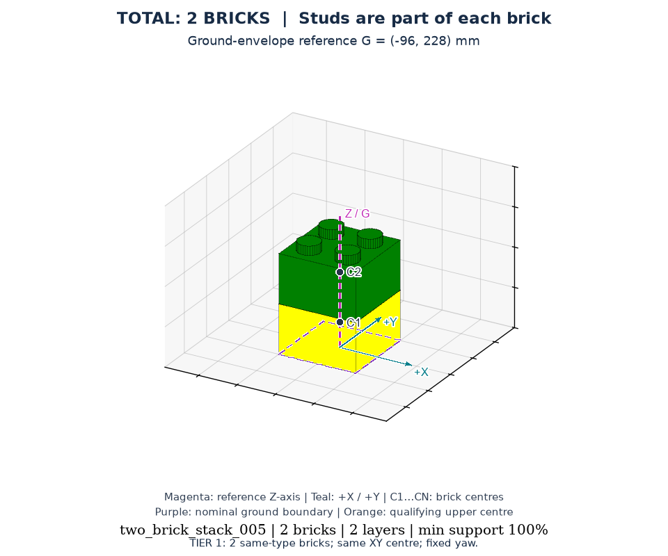
2 块 · seed 4 · 2 层
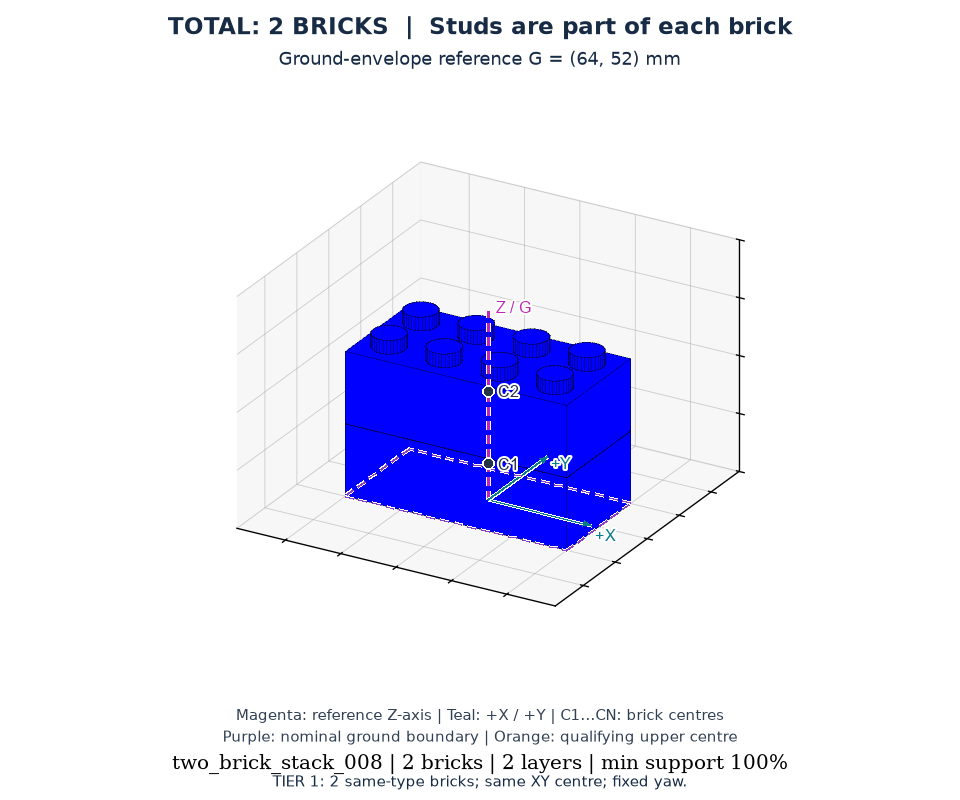
2 块 · seed 7 · 2 层
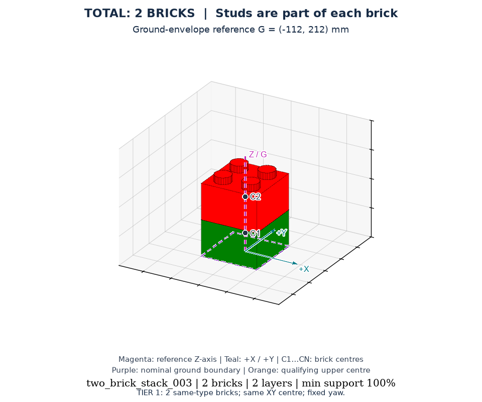
2 块 · seed 2 · 2 层
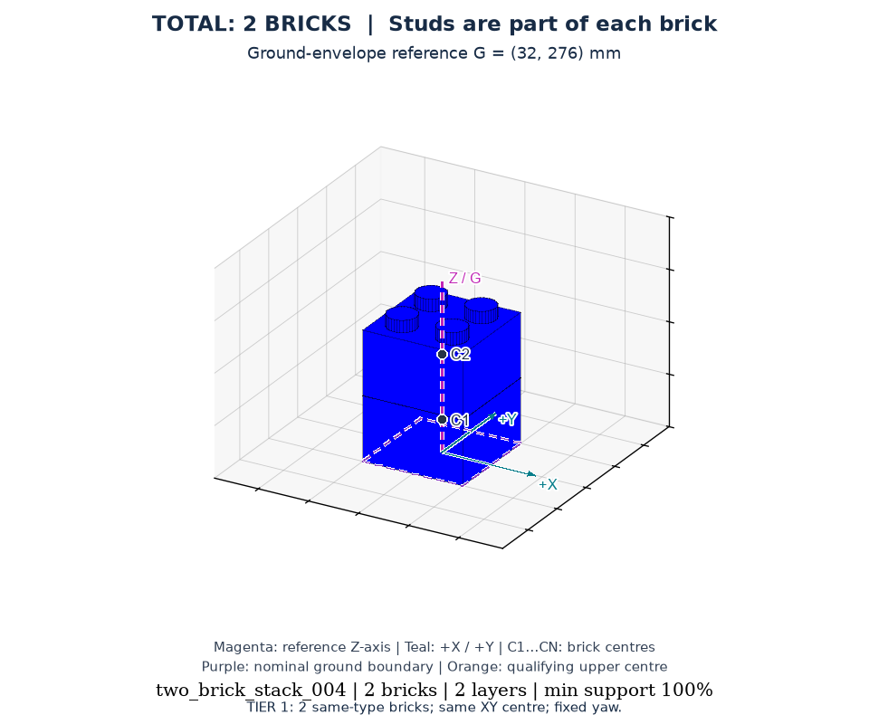
2 块 · seed 3 · 2 层
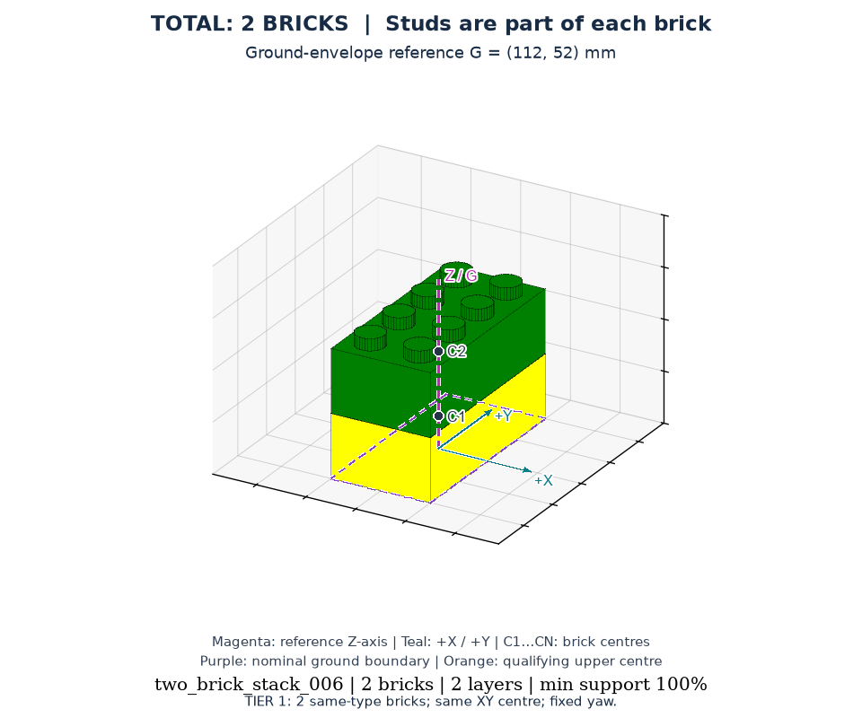
2 块 · seed 5 · 2 层
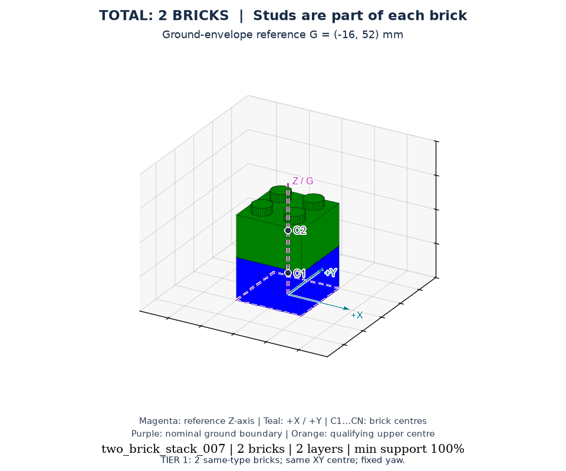
2 块 · seed 6 · 2 层
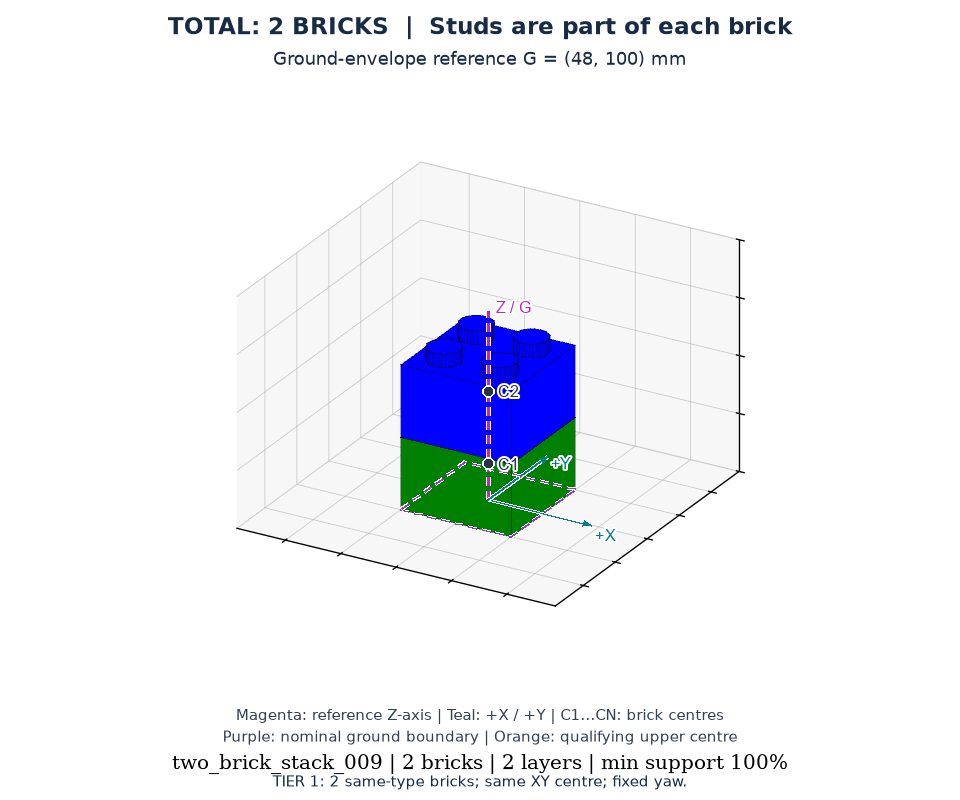
2 块 · seed 8 · 2 层
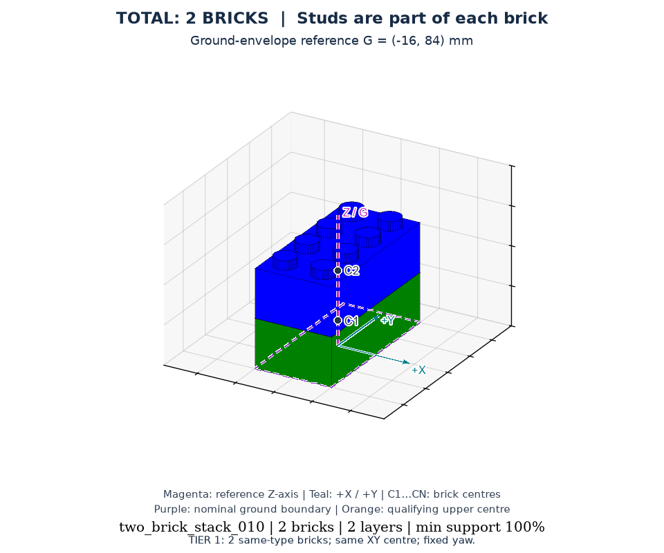
2 块 · seed 9 · 2 层
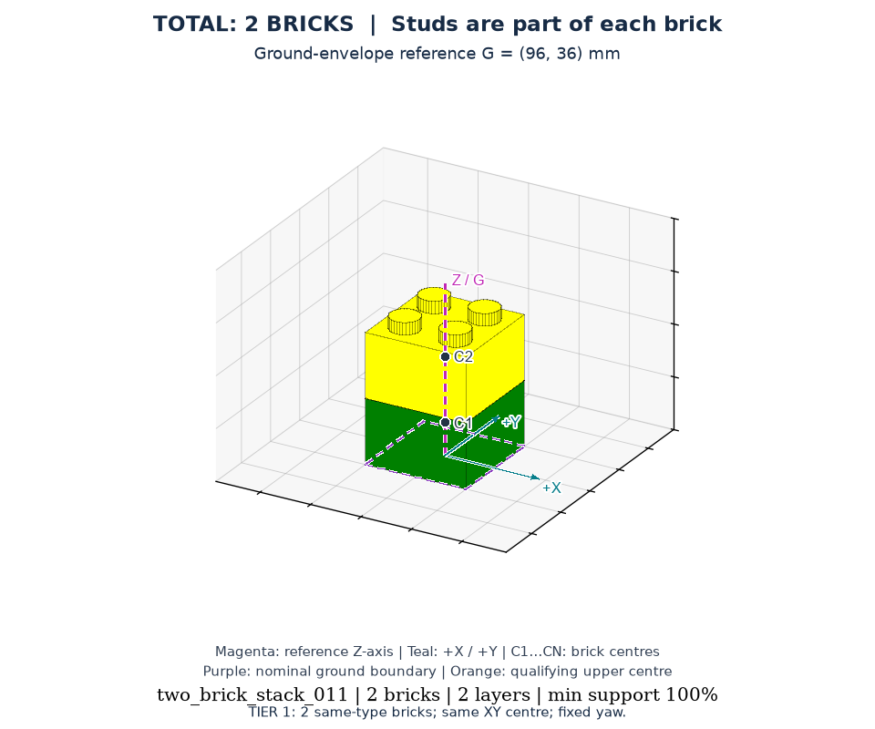
2 块 · seed 10 · 2 层
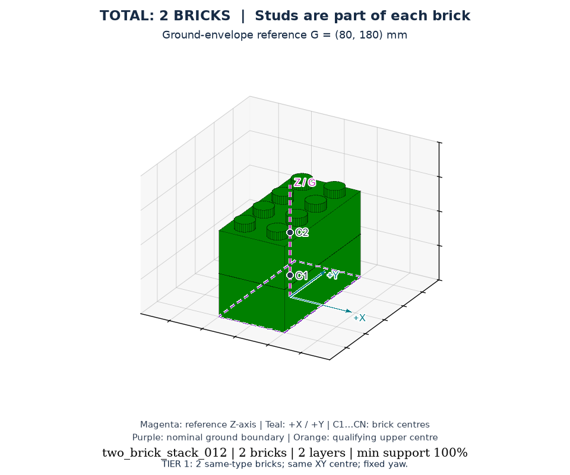
2 块 · seed 11 · 2 层